Every unresolved census glyph beside the printed page. Where several pages carry the same context, ALL are shown (the E021 lesson: the first page-match is not the right page-match). Verdicts export below; nothing is applied from here.
ê U+00EA · register…āyañca2 imināva nayena vuttaṁ. Dêghanikāyaṭṭhakathāyaṁ3 pana “ma…
register suggests: Dīghanikāyaṭṭhakathāyaṁ3 · confidence high
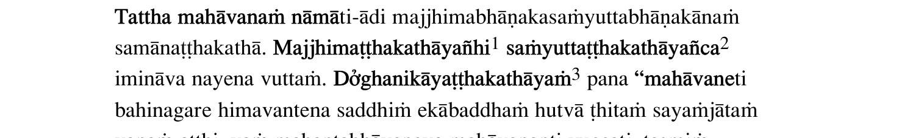
ò U+00F2 · register…hasu dhammesu sikkhitasikkhāya vòṭthānasammutiṁ dadeyya, esā ñat…
register suggests: vuṭthānasammutiṁ · confidence review
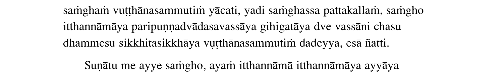
ó U+00F3 · register…etī”ti-ādi sabbaṁ upajjhāyassa āóattiyampi veditabbaṁ. Sesametth…
register suggests: āṇattiyampi · confidence high
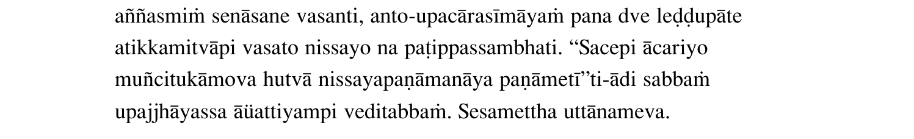
ó U+00F3 · register…hi adinnādānato muccatīti idaṁ āóattikapayogaṁ sandhāya vuttaṁ, …
register suggests: āṇattikapayogaṁ · confidence high
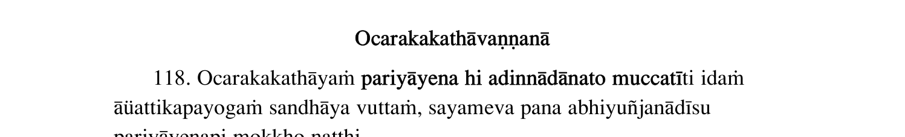
ê U+00EA · register…sāmī”ti agamāsi. Ārāmikā disvā Dêghabhāṇaka-abhayattherassa āroc…
register suggests: Dīghabhāṇaka · confidence high
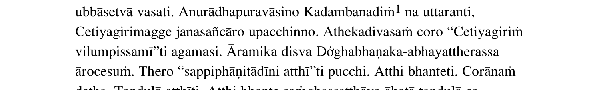
é U+00E9 · register…a kho panāhaṁ bho brahmānaṁ passémi, na brahmunā sākacchemi, na …
register suggests: passimi · confidence review
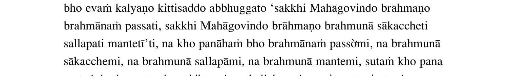
ó U+00F3 · register…i ratanāveḷaratanadāma-ratanacuṇóavippakiṇṇaṁ viya, pasāritarata…
register suggests: ratanacuṇṇavippakiṇṇaṁ · confidence high
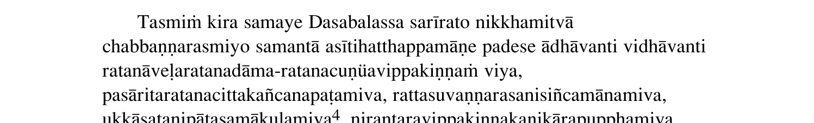
è U+00E8 · register…ññesampi uttānoti na vattabbo. Rèhu-asurindo pana pādantato yāva…
register suggests: Rāhu · confidence high
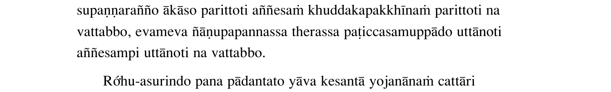
î U+00EE · register…aṁ passatha. Upasaṁharathāti upaîetha, imaṁ Licchaviparisaṁ tumh…
register suggests: upanetha · confidence high
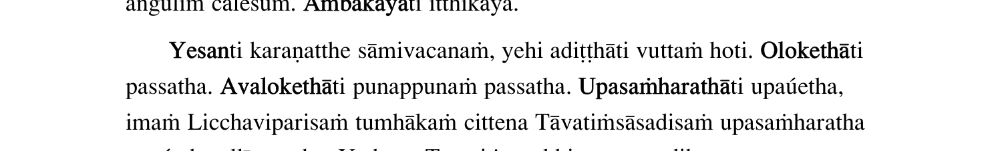
î U+00EE · register…vatiṁsāsadisaṁ upasaṁharatha upaîetha allīyāpetha. Yatheva Tāvat…
register suggests: upanetha · confidence high
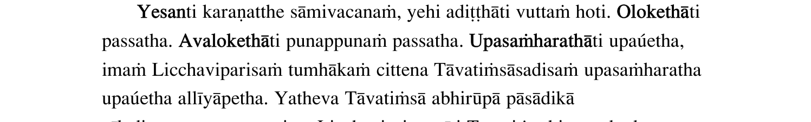
è U+00E8 · register…a hutvā. Rāhubhaddamupāgamunti Rèhu-asurindaṁ upasaṅkamiṁsu. Sam…
register suggests: Rāhu · confidence high
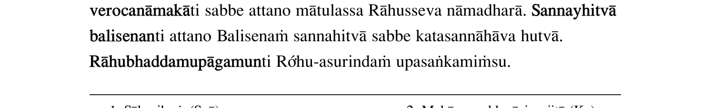
è U+00E8 · register…bbabhāgamaggassa adhippetattā. Kèyādicatu-ārammaṇappavatto hi pu…
register suggests: Kāyādicatu · confidence high
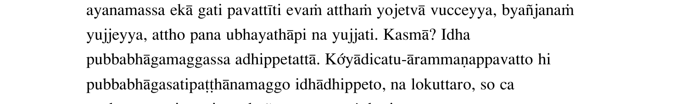
ÿ U+00FF · register…mpadaṁ, acirūpasampanno kho panāÿasmā Seniyo eko vūpakaṭṭho appa…
register suggests: panāyasmā · confidence high
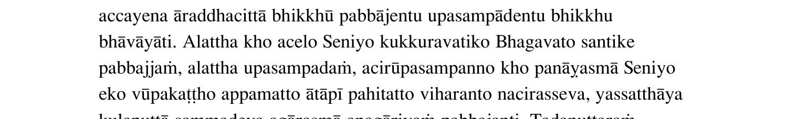
Ù U+00D9 · register…īyacuṇṇāni2 ākiritvā udakena parÙpphosakaṁ paripphosakaṁ sanneyy…
register suggests: paripphosakaṁ · confidence review
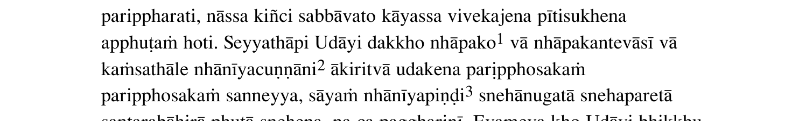
Ø U+00D8 · register…ṅkhātaṁ gocaraṁ uggahetvā bhikkhØcāragocare taṁ gahetvā gamanaṁ …
register suggests: bhikkhācāragocare · confidence high
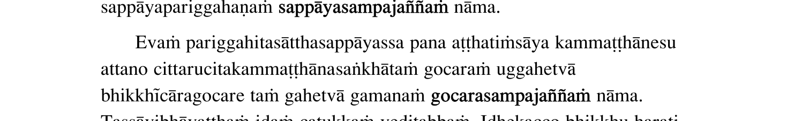
Ù U+00D9 · register…ipāto, tena ca cha Satthāre sampÙṇḍeti. Yathā pūraṇādayo “Sammās…
register suggests: sampiṇḍeti · confidence review
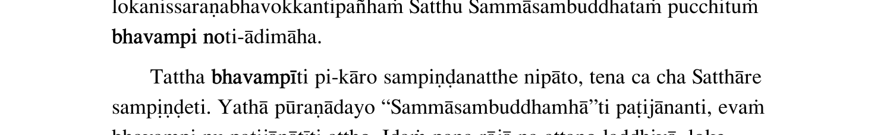
õ U+00F5 · register…. Karuṇāsahagatena cetasā -pa- mõditāsahagatena cetasā. Upekkhās…
register suggests: muditāsahagatena · confidence high
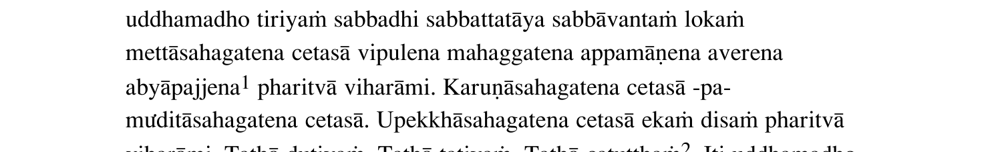
é U+00E9 · register…ena abyāpajjena pharitvā viharāmé. So ce ahaṁ brāhmaṇa evaṁbhūto…
register suggests: viharāmi · confidence review
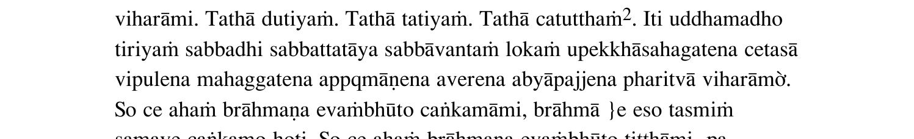
Ù U+00D9 · register…ccayalābhena tasmiṁ ārammaṇe adhÙṭthitatāya anekaggataṁ pahāya c…
register suggests: adhiṭthitatāya · confidence review
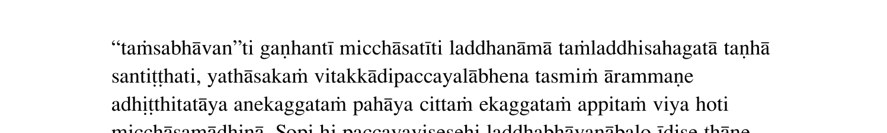
ò U+00F2 · register…attā. Yathāparicchedena kālena vòṭthātuṁ na sakkoti vuṭṭhānavasī…
register suggests: vuṭthātuṁ · confidence review
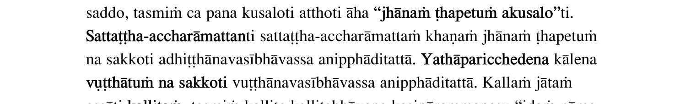
ó U+00F3 · register…atthe tālappamāṇaṁ ayasūlaṁ paveóenti, tathā vāmahatthādīsu. Yat…
register suggests: paveṇenti · confidence high
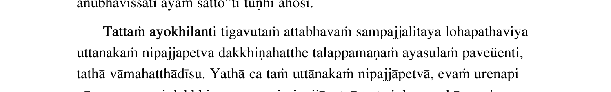
Ù U+00D9 · register… “dvattiṁsavarapurisalakkhaṇapatÙmaṇḍitaṁ nāma sarīraṁ atthi nu …
register suggests: dvattiṁsavarapurisalakkhaṇapatimaṇḍitaṁ · confidence review
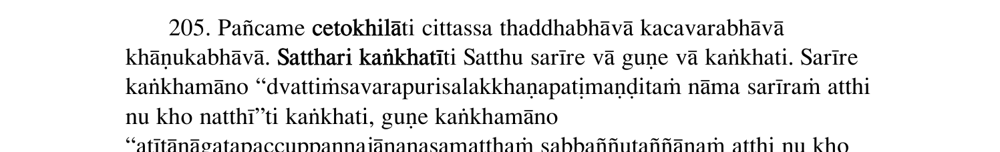
ò U+00F2 · register…ako Dhūpo, Pulino Uttiyena ca. Aòjalī Khomadāyī ca, daseva tatiy…
register suggests: Aujalī · confidence review
þ U+00FE · register…ro khandhā dvāyatanāni dve dhātuþoti-ādinā khandhāyatanadhātādim…
register suggests: dhātuyoti · confidence review
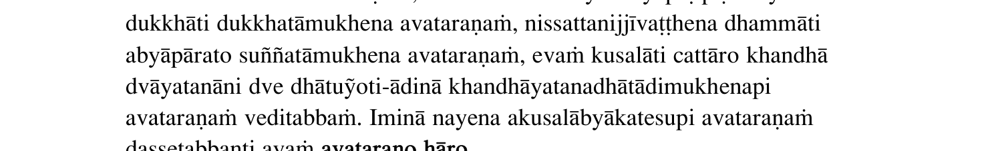
þ U+00FE · register…anatthanti aṭṭhakathāyaṁ adhippāþo daṭṭhabbo. Tathā hi “rūpārūpa…
register suggests: adhippāyo · confidence review
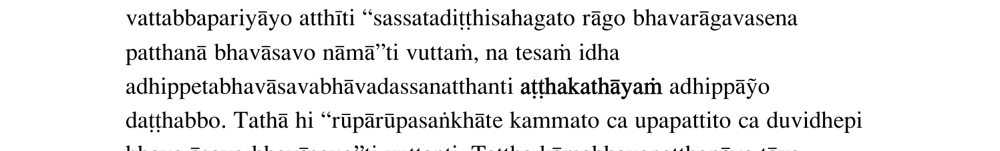
è U+00E8 · register…āgadassanatthanti vuttaṁ hoti. Nènācittavasena paṭijānantassa ad…
register suggests: Nānācittavasena · confidence high
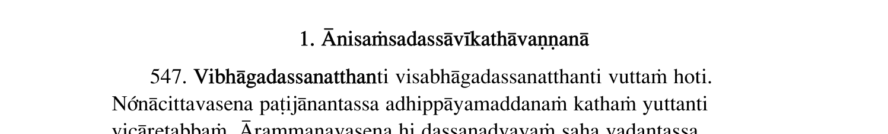
ê U+00EA · register…aṁ cettha āsevanaṁ daṭṭhabbaṁ. Sêlādidhammehi saṁvaraṇādivasena …
register suggests: Sīlādidhammehi · confidence high
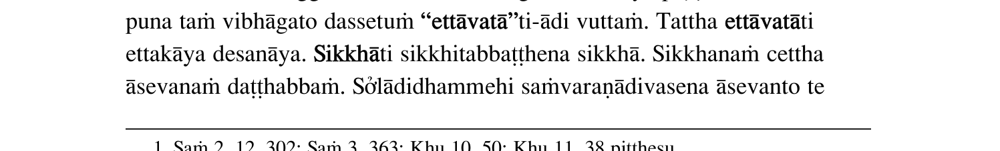
ò U+00F2 · register…āgasampattiyā appiccho hoti santòtṭho pavivitto asaṁsaṭṭho, vīri…
register suggests: santutṭho · confidence review
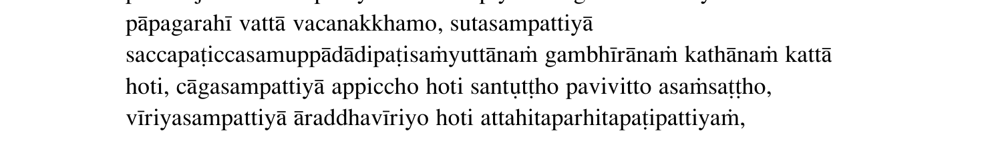
í U+00ED · register…aḍḍhanena pathavīkasiṇādivaḍḍhaní viya kiñci payojanaṁ natthi. P…
register suggests: pathavīkasiṇādivaḍḍhanī · confidence high
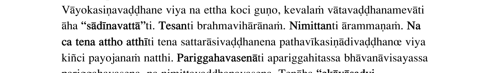
ê U+00EA · register…imūlakañca dukkhaṁ saṅgaṇhāti. Vêriyāyattassa lokiyalokuttaravis…
register suggests: Vīriyāyattassa · confidence high
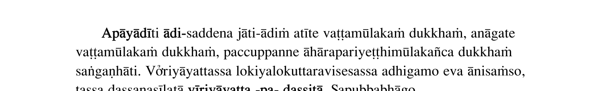
Ù U+00D9 · register… diṭṭhi “ahan”ti mānavinibandhādÙṭhi “maman”ti mānavinibandhā di…
register suggests: mānavinibandhādiṭhi · confidence review
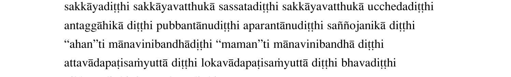
ó U+00F3 · register… visuddhiyā”ti1. Tattha katamā āóatti– “Cakkhumā visamānīva, vij…
register suggests: āṇatti · confidence high
è U+00E8 · register…tto atthi. Paññāvimutto atthi. Kèyasakkhi1 atthi. Diṭṭhippatto a…
register suggests: Kāyasakkhi1 · confidence high
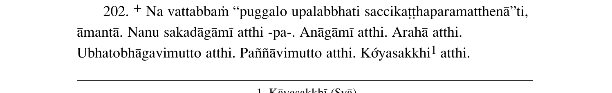
è U+00E8 · register…ammaṁ rūpaṁ kusalanti, āmantā. Sèrammaṇaṁ, atthi tassa āvaṭṭanā …
register suggests: Sārammaṇaṁ · confidence high
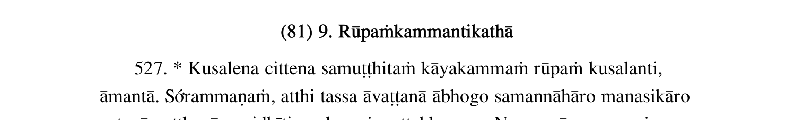
è U+00E8 · register…viññāṇā purejātavatthukā purejātèrammaṇā ajjhattikavatthukā bāhi…
register suggests: purejātārammaṇā · confidence high
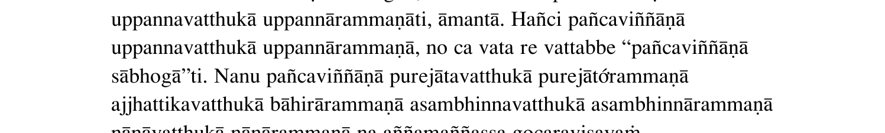
ê U+00EA · register…Anomadassissa Bhagavato Candavatê nāma nagaraṁ ahosi, Yasavā nām…
register suggests: Candavatī · confidence high
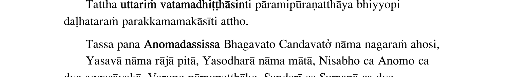
ó U+00F3 · register…aṅgahavatthūhi sammadeva saṅgahaóato ca sabbakālaṁ sambhattapari…
register suggests: saṅgahaṇato · confidence high
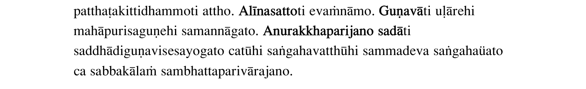
Ù U+00D9 · register…ti ca, asati neva uppajjati na tÙṭhatīti evaṁvidhena sīlena saha…
register suggests: tiṭhatīti · confidence review
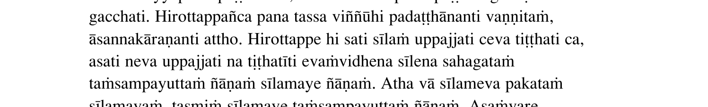
è U+00E8 · register… paṭibhānapaṭisambhi dāñāṇena. Tèni ñāṇāni jānātīti itarāni tīṇi…
register suggests: Tāni · confidence high
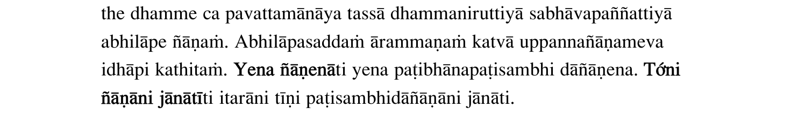
è U+00E8 · register…āsakā upāsikāyo ca paññāpenti. Pètimokkhasaṁvarasīlaṁ pana sabba…
register suggests: Pātimokkhasaṁvarasīlaṁ · confidence high
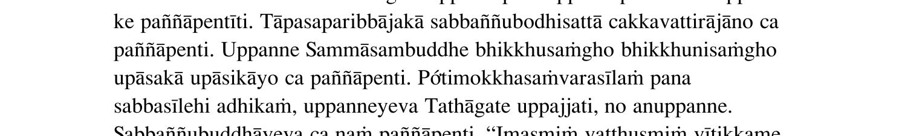
è U+00E8 · register…tanāni. Purisapuggaloti satto. Kèmañca purisotipi puggalotipi vu…
register suggests: Kāmañca · confidence high
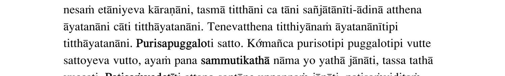
U+008F · sidecar:control…mpi taṁ tadeva āyuparimānṁ hotīti veditabbaṁ. 8. …
register suggests: (delete?)
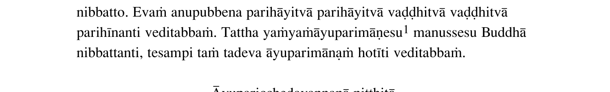
U+008F · sidecar:control…ntokucchiyaṁ cakkhuviññānṁ uppajjati. 24. Kālaṁ k…
register suggests: (delete?)
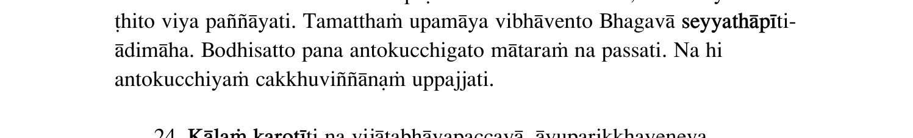
U+008F · sidecar:control…jjitaṁ mahantaṁ hoti, ñānṁ anupavisati, Buddhañāṇ…
register suggests: (delete?)
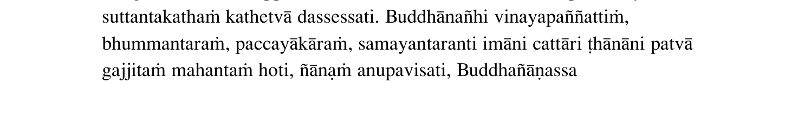
U+008F · sidecar:control…i2 idaṁ sahajātasamosaranṁ nāma. “Dvayena vedanāy…
register suggests: (delete?)
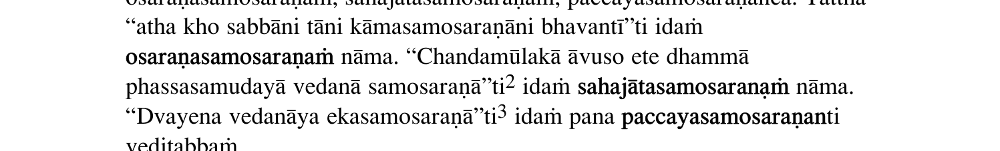
U+008F · sidecar:control… yaṁ manussānaṁ āyuppamānṁ hoti, taṁ paripuṇṇaṁ k…
register suggests: (delete?)
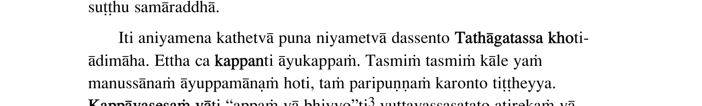
U+008F · sidecar:control…aṭividdhaṁ sabbaññutaññānṁ, kiṁ te lokavicāraṇenā…
register suggests: (delete?)
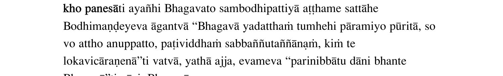
U+007F · sidecar:control…adosamoha-indakhīlameva. hacca manejāti ete taṇhā…
register suggests: (delete?)
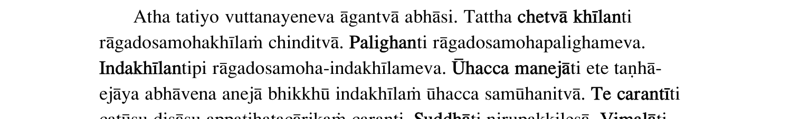
q U+0071 · sidecar:nonpali_ascii…yantūti vuccantī”ti āha. qayhantu vāti pete sandhā…
register suggests: (delete?)
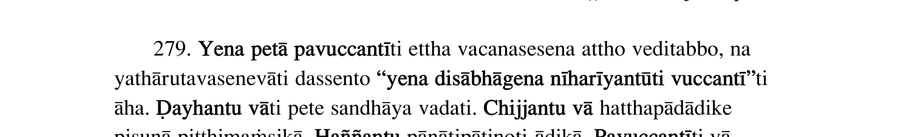
q U+0071 · sidecar:nonpali_ascii…, sajjukhīraṁva muccati. qahantaṁ1 bālamanveti, bh…
register suggests: (delete?)